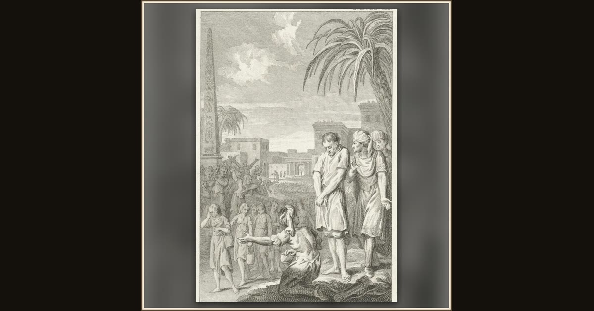

Psammetichus III gevangen genomen door Cambyses II
Reinier Vinkeles (I), after drawing by Jacobus Buys · 1780 · rijksmuseum
An engraving shows the captive Psammetichus among onlookers as people pass before him; Herodotus says he held back tears when his son was led toward death (3.14.6) Explore its place in Herodotus's Histories, Book III, chapter 47.